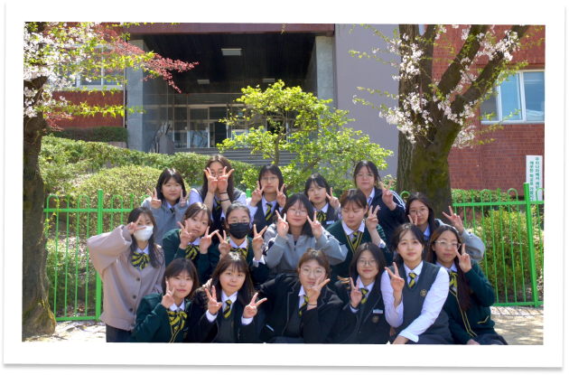
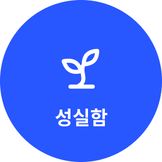
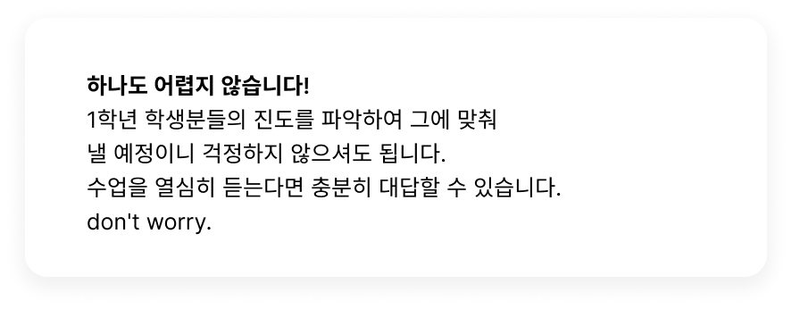
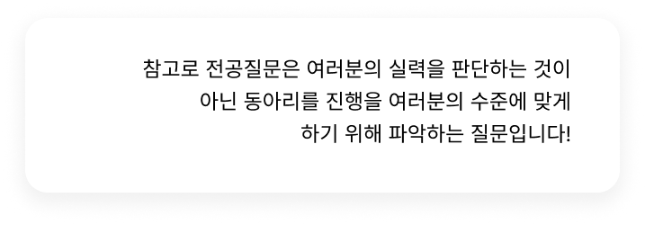

gallery
지원폼
Q&A

토퍼 동아리에서는
무슨 활동을 하나요?
스터디
,
공모전
과
프로젝트
활동을 합니다.
1학기에는 공모전과 친목활동을 위주로 하고
2학기에는 스터디와 프로젝트 활동을 중심적으로 합니다.
토퍼는 선후배 사이도 좋아 서로 피드백을 주며
좋은 관계를 가질 수 있다는 장점이 있습니다!
don't worry.
← instagram
전공 잘해야 하나요?

저희는 전공보다는
성실함
,
인성
,
창의력
에
초점을 맞추었습니다. 그러니 don't worry.
전공 질문 어렵나요?

